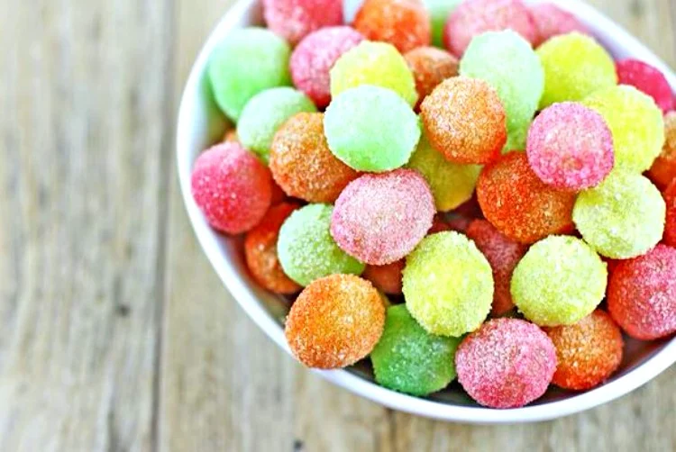
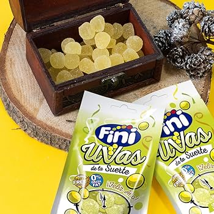
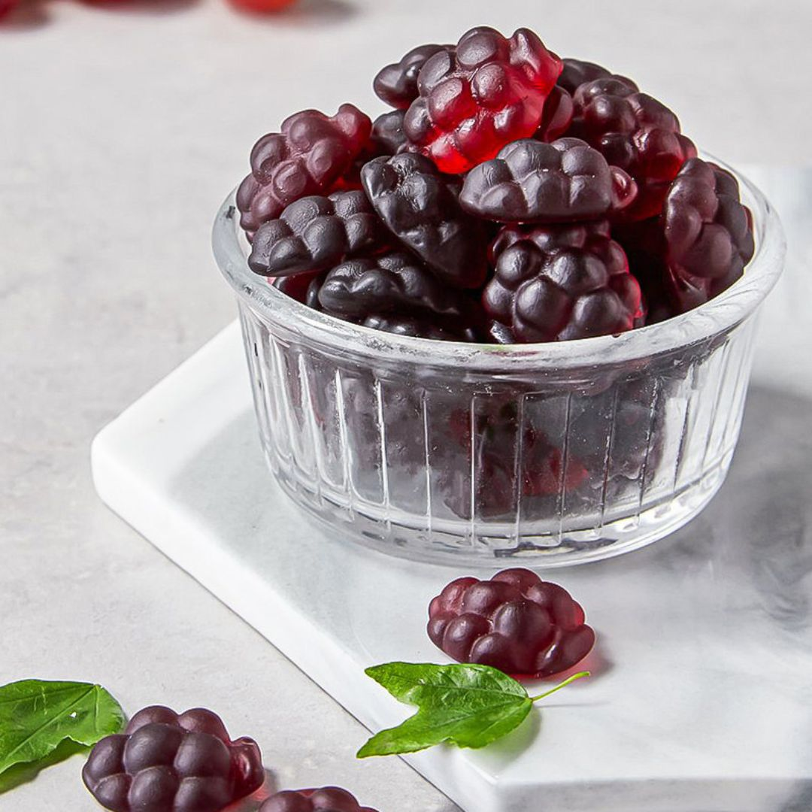
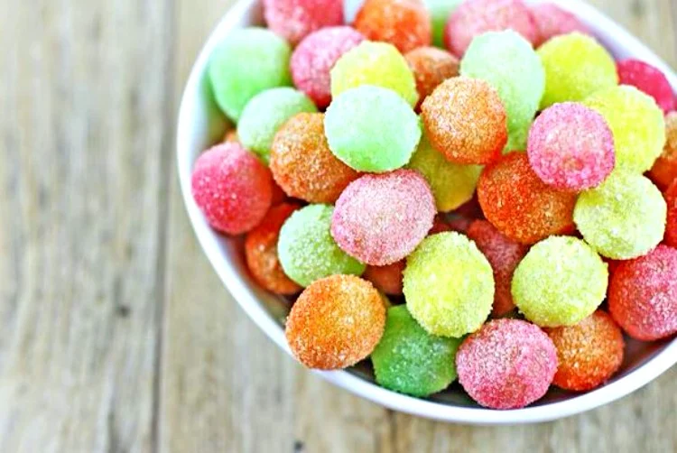
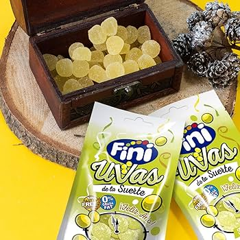
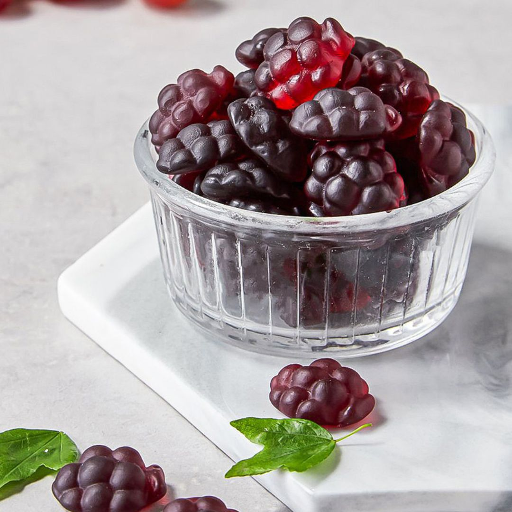

MORADO - UVA
UVA
UN SABOR INTENSO, AROMÁTICO Y LLENO DE PERSONALIDAD. EL FAVORITO DE QUIENES BUSCAN ALGO DIFERENTE.
DESCRIPCIÓN
El sabor a uva destaca por su aroma profundo y su dulzor característico, diferente a cualquier otra fruta. En cada chuche se concentra un sabor intenso, ligeramente afrutado y muy reconocible. Este sabor suele tener una esencia envolvente que recuerda a bebidas aromáticas y caramelos clásicos. Es perfecto para quienes buscan algo dulce con un perfil más elegante y sofisticado.
CURIOSIDADES SOBRE LA UVA
- Es uno de los sabores artificiales más emblemáticos del siglo XX.
- Muy común en caramelos duros y chicles de larga duración.
- El color morado se asocia con creatividad y misterio.
- El aroma a uva suele ser uno de los más fuertes en cualquier surtido.
PERFIL DE SABOR DETALLADO
| ATRIBUTO | VALOR | DESCRIPCIÓN |
|---|---|---|
| Dulzor | ⭐⭐⭐⭐ | Dulzor marcado pero equilibrado. |
| Acidez | ⭐ | Muy ligera, más centrado en lo aromático. |
| Intensidad aromática | ⭐⭐⭐⭐⭐ | Aroma profundo y muy característico. |
| Suavidad | ⭐⭐⭐ | Menos cremosa, más intensa. |
TIPOS DE CHUCHES DE UVA
- Caramelos duros: sabor potente y muy aromático.
- Chicles: clásicos, con aroma persistente.
- Gominolas moradas: texturas suaves y aromáticas.
- Piruletas de uva: dulces, frutales y muy intensas.
- Mini uvas: gomitas pequeñas en forma de racimo.
 






OPINIONES DE CONSUMIDORES
Marta (★★★★★): “El sabor más aromático, un clásico que nunca falla.”
Ramón (★★★★): “Muy intenso, perfecto si te gustan los sabores fuertes.”
Sofía (★★★★★): “Mis favoritas desde pequeña. El olor es irresistible.”